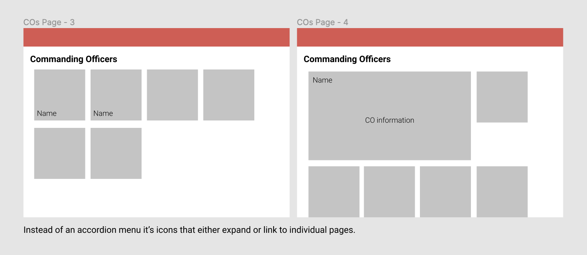
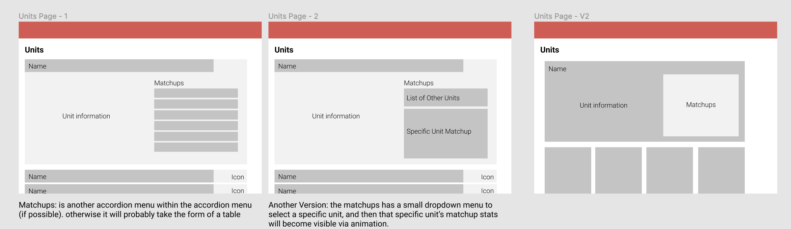

These wireframes are more so rough drafts of my vision for the website. There are some ideas here where I don't know how feasible it would be to accomplish with UIKit (or another framework), and I would like feedback especially on this front.
The initial concept I had was a sort of single-page application sort of site, where all the information the user wished to access could be gathered on one page for easy viewing. I grouped the game's mechanics into three parts: Commanding Officers, Units, and Map/Terrain. The right page divides the site space into three sections based on this, with each section functioning as its own mini-page (i.e. the content scrolls independently from the other three sections). This is where I imagined some of the animated cards come in, but mostly for added effect.
Alternatively, the left page follows a more standard layout, with a sidebar menu (that may or may not be toggled) that allows the user to navigate to the three different sections.
The "COs" and "Map/Terrain" sections will be more or less the same. They include options for the user to choose from, each of which will lead to more specific information. One implementation of this is an accordion menu, with each label containing the name of the CO/Terrain Element and a small icon that expands into a full image when the menu item is expanded.
Another possible implementation is that each menu item takes up a small space on screen, and each card when clicked expands to reveal more specific information. If this is not feasible the cards will instead probably link to more pages, but if that is the case I will not be pursuing this option.
The most tricky thing will be the Unit Page. Each unit in advance wars has specific matchup statistics against every other unit in the game (i.e. Unit A might fare well against Unit B, but poorly against Unit C). Initially, I envisioned this matchup chart to be a second accordion menu, if not just a table within the section, with each accordion item displaying matchup stats against a specific unit. I chose the accordion format so the page would not be cluttered with matchup statistics against all units at once. The second option (page 2) involves a drop-down menu of sorts, where the user can select from the list of units to see specific matchup stats. When an option is selected, a card containing the information requested will appear in the space shown (this is where animation happens).
This latter option is also how I imagined the no-sidebar page to work. With just dropdown menus the user could select from that would swap out what content was displayed in each section.